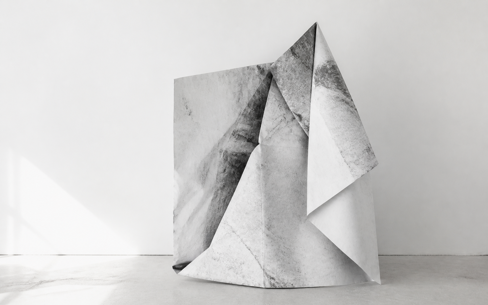
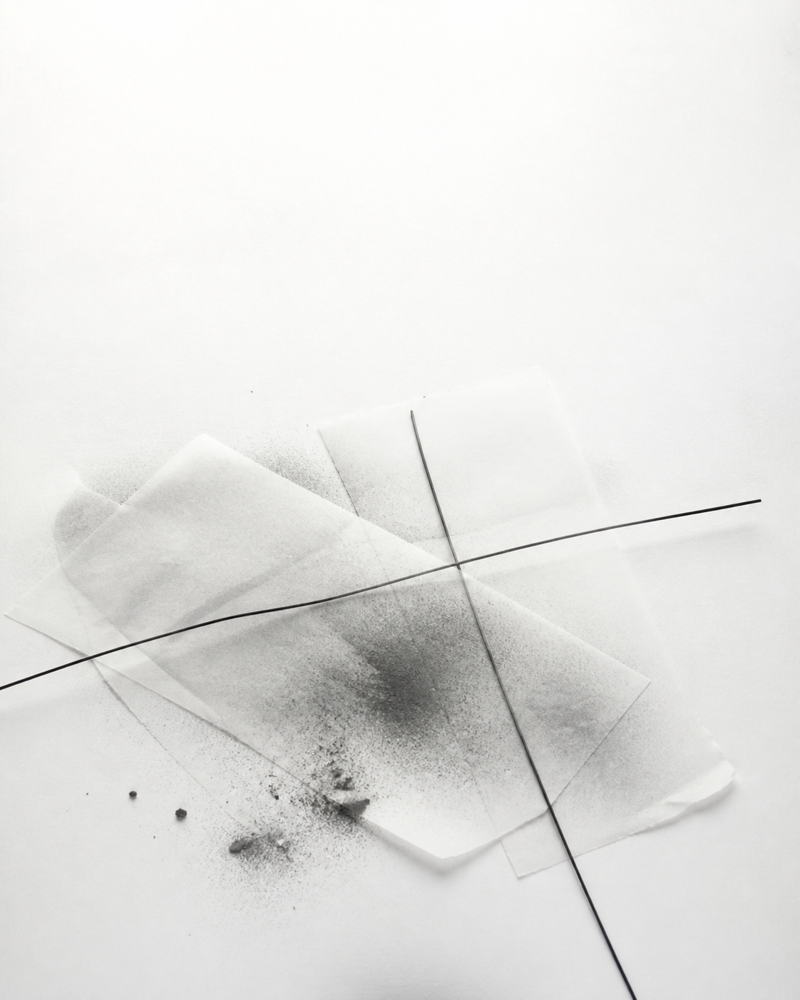

Current Research Project / 2026
Three Transformations
A three-part work that treats transformation as a material and perceptual process. Camel, lion, and child become structural positions for carrying, breaking, and beginning again within image-based research.

Camel
The first movement approaches transformation through carrying. Image fragments gather as weight, forming a structure of endurance, obedience, and compressed memory.

Lion
The second movement turns the accumulated field into an act of resistance. Drawing and printed structure become a way to test rupture, refusal, and the moment a form separates from what has shaped it.
Child
The final movement opens toward play and beginning. The image field is treated as something provisional and alive, where perception can reorganize itself without returning to a fixed order.
Research Notes
The title refers to a sequence of transformation rather than a literal narrative. Within the portfolio, the work connects the material logic of artist books with newer experiments in field, residue, bodily attention, and image systems.